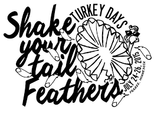

Frazee

Worlds Largest Turkey
Frazee is home to the worlds largest turkey. The turkey was constructed to symbolize Frazees history of turkey farming, and how much it effected Frazees residents many years ago. The statue that you can visit today was built in 1998 after the original one burnt down early that year.
Frazee
Frazee is a small town that's just a couple miles east of Detroit lakes, and is known for being the small town that has the world's largest turkey (statue). Frazee is also big on wrestling and prides itself on its high school wrestling team.
Audio Version
Upcoming Events
Turkey Days
Turkey days is an event held once a year, and there are a ton of events that happen during turkey days. Miss Frazee, Water fights, demolition derby, and a bunch of different dances for everyone.